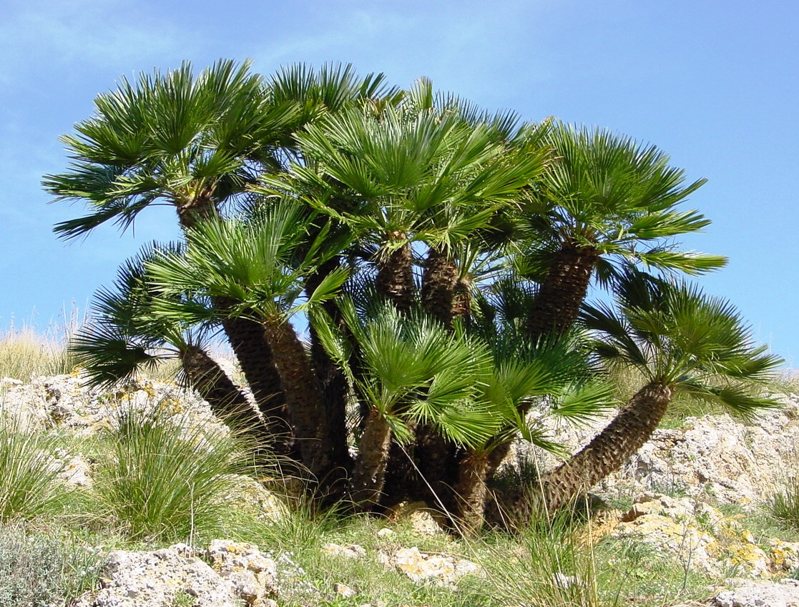

Utilizzi
Lo zucchero può essere ottenuto da numerose palme, viene ricavato dalla linfa che sgorga incidendo la l’asse dell’infiorescenza.
Lo zucchero greggio ha un colore bruno e sapore gradevole, contiene il 50-75% di saccarosio, mentre quello raffinato ha una percentuale molto più elevata, fino al 98%.
Diversi tipi di palme
Tra le più note palme da zucchero citiamo: Arenga sacchifera, Cayota urens e Borassus flabellifer (nella foto di fianco). Quest’ultima è originaria della Malesia ed è forse la palma più coltivata dopo la palma da cocco. I germogli sono particolarmente apprezzati come cibo dagli indigeni.
Prodotti derivati
Zucchero di palma
Altre palme

Palma da cera

Palma da olio

Palma nana

Palma dell'avorio